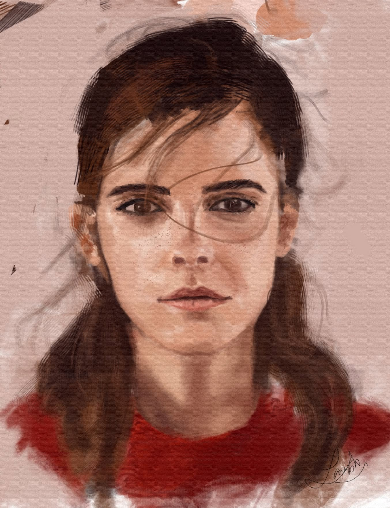
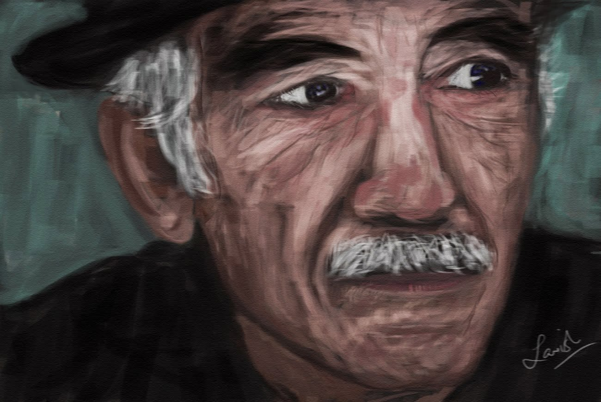
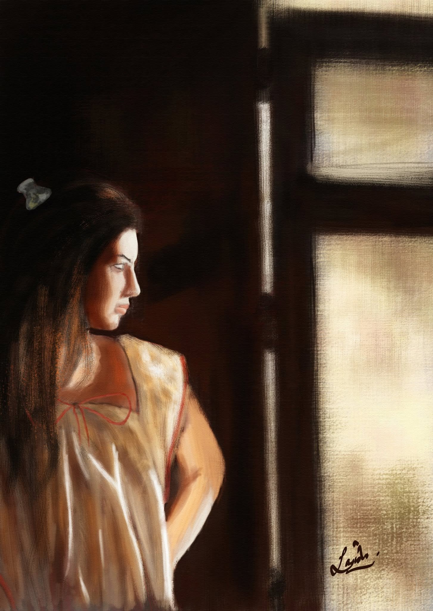
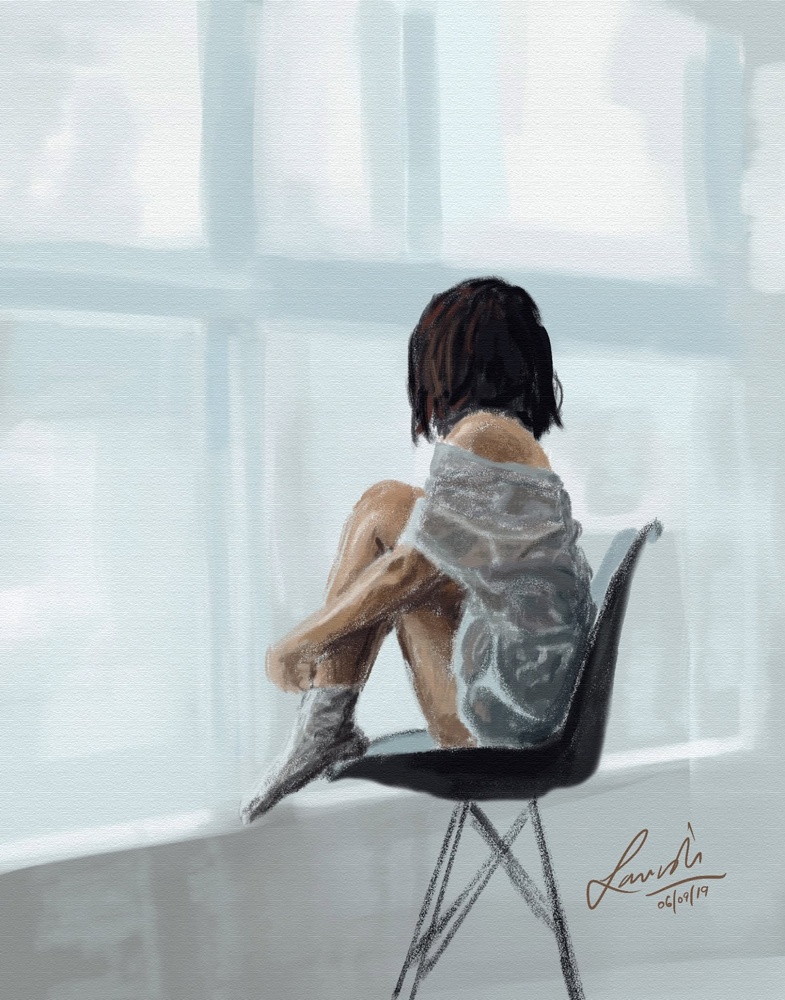
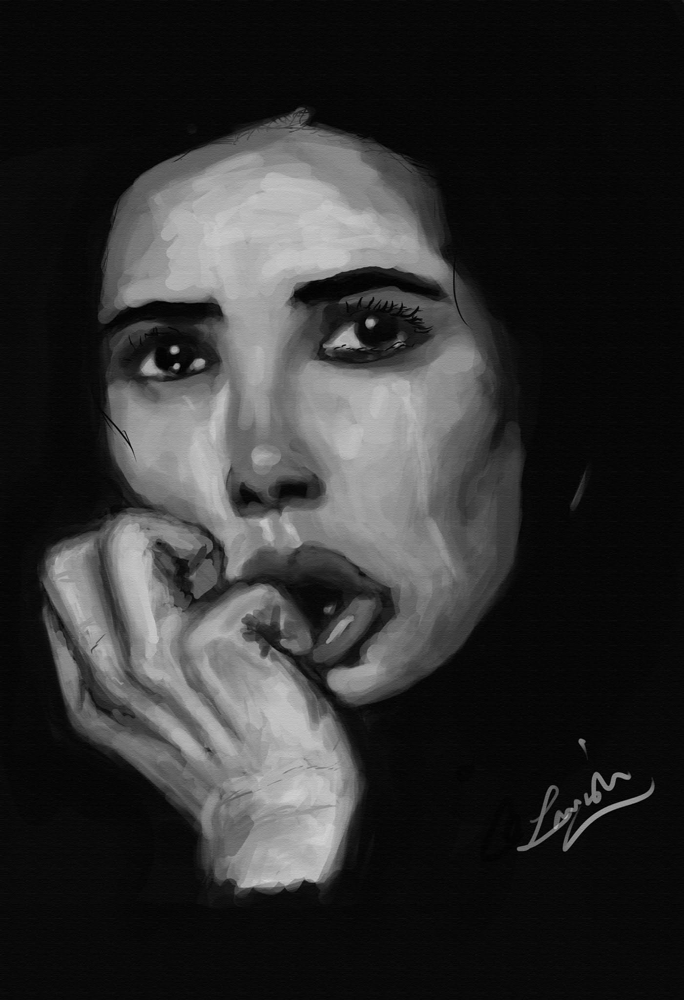
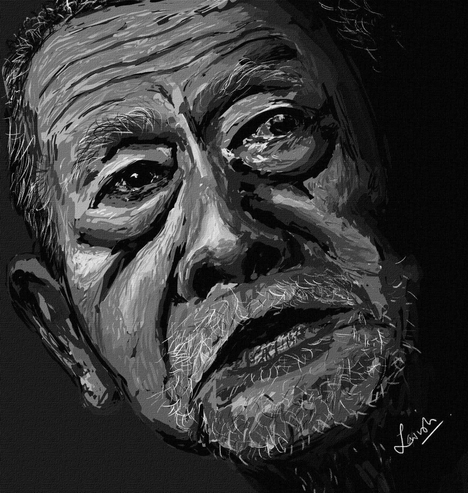
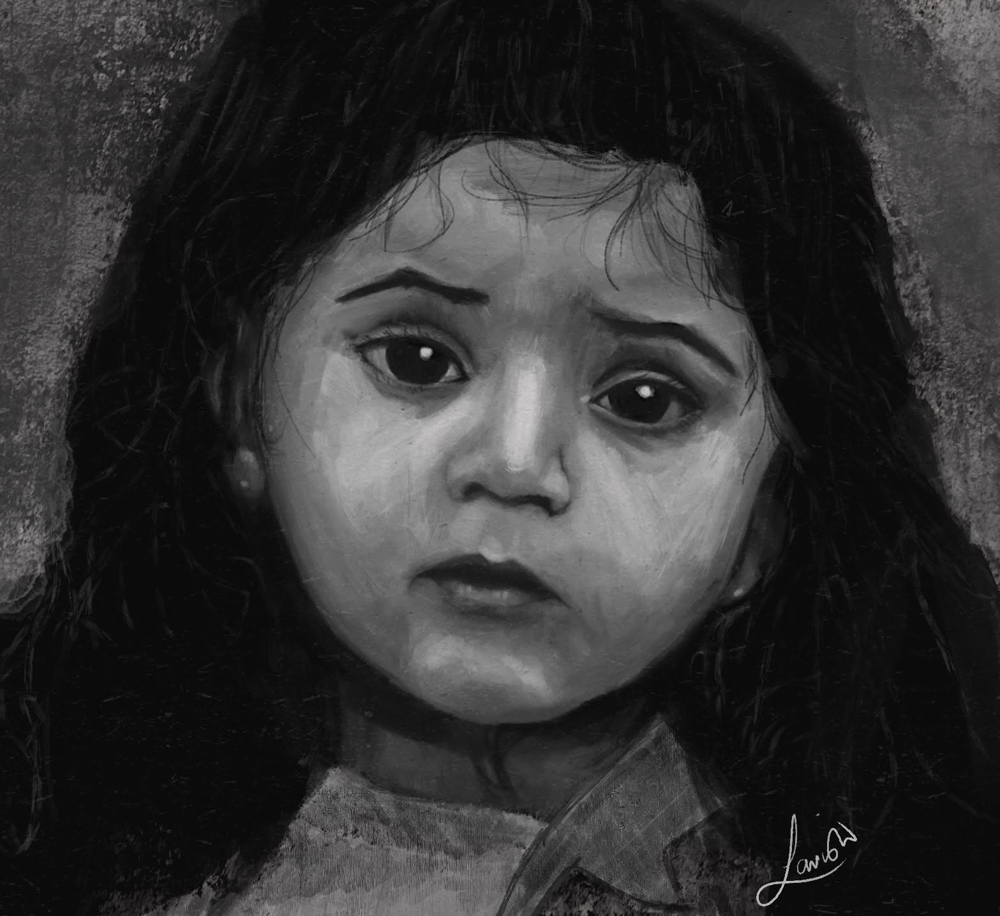
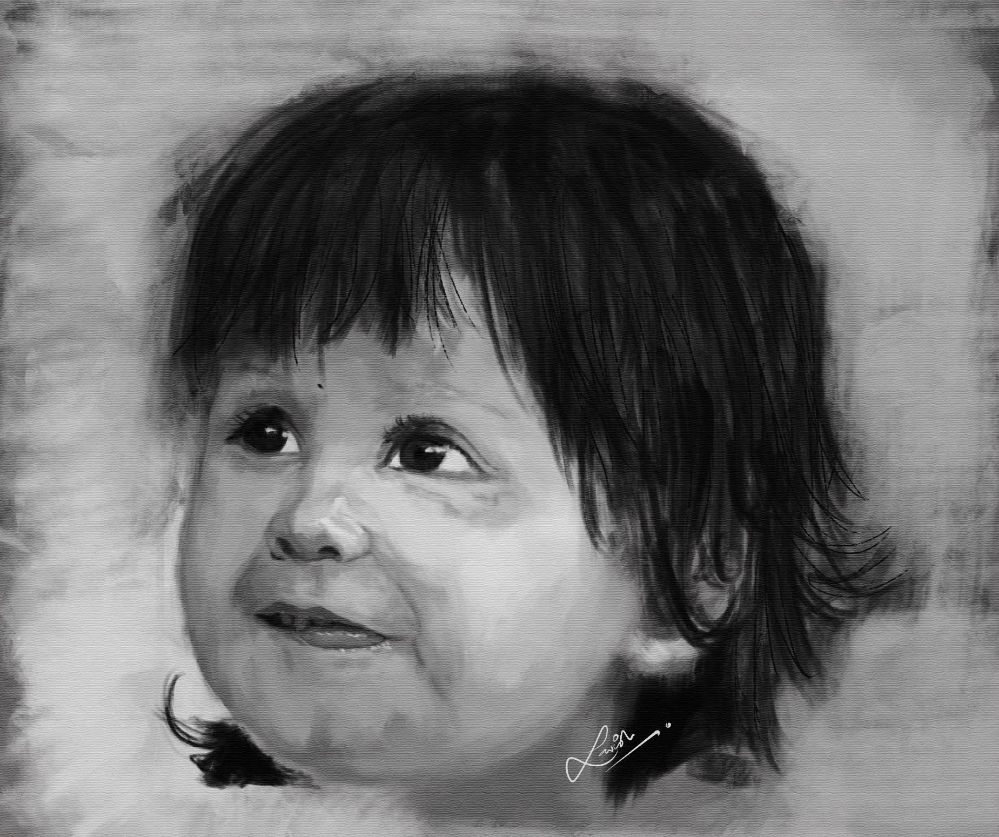
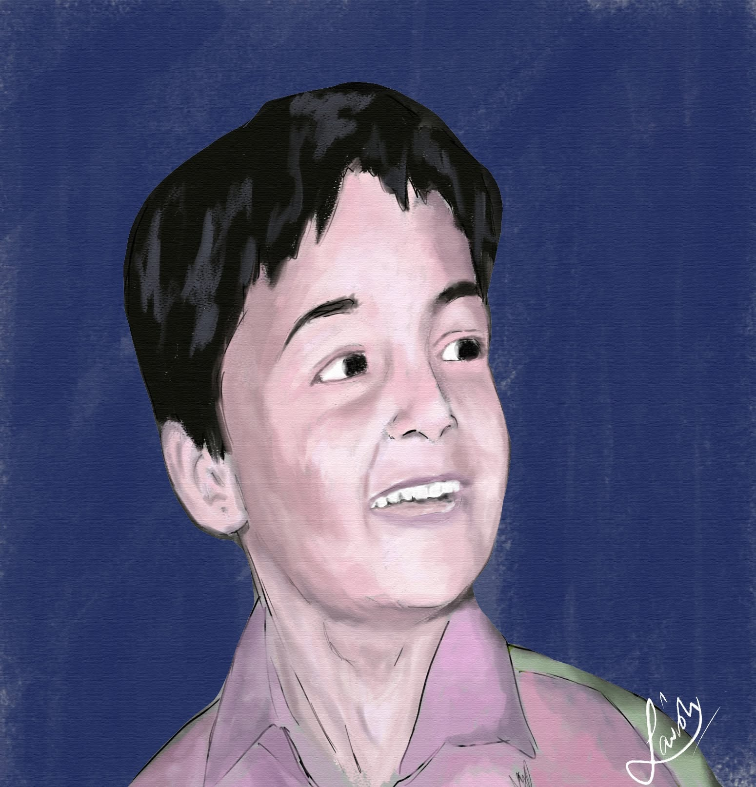
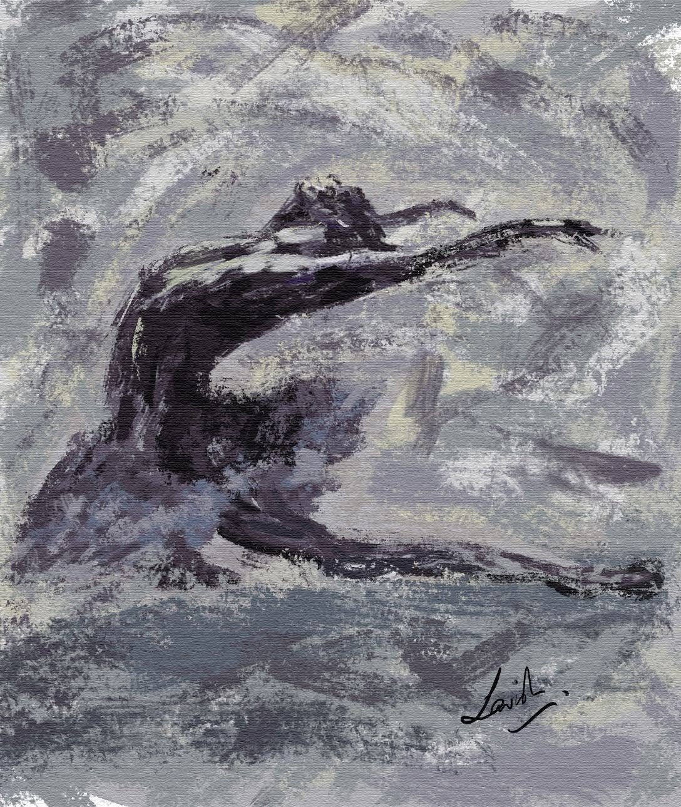

ACT Mobile
A mobile app project designed to keep people connected wherever the road takes them.
Vancouver, BC · 49.2827° N
— Pablo Picasso
I’m Lavish Mittal — a programmer, musician, painter, and a mountie. I live at the intersection of technology, creativity, and service.
Curious by nature.
Driven by craft.
/ What I do
Different disciplines, same instinct:
/ Selected artwork
Portraits and moments painted over the years — an ongoing practice in observation, light, and emotion.

Portrait study ↗
Character study ↗
By the window ↗ Quiet study ↗ Red robes ↗
Light study ↗
Expression ↗
In detail ↗
Childhood ↗
Portrait in grey ↗
Blue portrait ↗
Movement study ↗/ Featured work
A mobile app project designed to keep people connected wherever the road takes them.
/ Elsewhere
Follow along for the things I’m building, making, and learning.